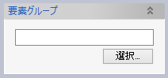

干渉チェック
指示された要素間に干渉があるかどうか計算します。
操作方法
チェック対象の要素とパラメータを入力し干渉計算の実行を行うと、干渉している要素が選択状態となり、ビュー上で干渉位置を確認できます。
その後、干渉している要素に対して操作したり、干渉位置の注記や干渉ソリッドを実体化できます。
パラメータ
- チェック対象
干渉チェックをする対象要素を選択します。
- モデル全体
モデルに含まれる全てのソリッド要素とコンポーネント要素を対象とします。
- 表示要素内
モデル全体のソリッドとコンポーネントのうち、表示されている要素のみを対象とします。
- 選択要素内
対象となるソリッド要素やコンポーネント要素を選択します。

- 要素グループ内
指定した要素グループに含まれる全てのソリッド要素とコンポーネント要素を対象とします。

- モデル全体
- チェック方法
干渉チェックの方法を以下の3種類から選択します。
- 干渉の深さ
干渉部分を矩形近似して、その最小辺長さが指定したトレランスよりも大きかったら干渉と判定します。 モールドが逆になっていて条材が板に食い込んでいるようなケースで有効です。
- 干渉割合
干渉部分の体積が、チェック対象要素の体積に対して、指定した割合よりも大きかったら干渉と判定します。 適切な「干渉の深さトレランス」が指定できない場合、たとえば薄い板同士の干渉をチェックしたいが板厚よりも大きいトレランスを指定してしまうと干渉が見つけられなくなるようなケースで使います。
- 隙間検出
要素間の最短距離を測定し、その値が指定した上限下限の範囲内だったら隙間として検出します。
- 干渉の深さ
- 干渉の深さトレランス（チェック方法「干渉の深さ」）
微小な干渉要素を除くための許容長さを入力します。
干渉部分の非軸整列のボックスを計算し、そのボックスの最小辺の長さがトレランス以下の場合に干渉と判定しません。 - 干渉割合トレランス（チェック方法「干渉割合」）

体積のパーセンテージを指定します。 干渉部分の体積を計算し、その値がチェック対象要素のうち小さいほうの体積の指定パーセンテージ以下の場合には、干渉と判定しません。
- 最小値、最大値（チェック方法「隙間検出」）
チェック対象要素間の最短距離を測定し、その値が指定した最小値以上かつ最大値以下であった場合に、隙間として検出します。
- 単一要素とみなすグループ
「選択」ボタンをクリックして要素グループを選択すると、そのグループをひとつの要素とみなして、グループ内の要素同士の間ではチェックを実行しません。 また、複数グループを選択した際の動作をオプションで変更できます。
- グループごとに別々の要素
異なるグループに含まれる要素同士を別々の要素とみなして要素間でチェックを実行します。 - 全グループでひとつの要素
異なるグループに含まれる要素同士でもひとつの要素とみなすため、要素間でチェックを実行しません。
- グループごとに別々の要素
- 検出対象の組み合わせ
干渉を検出する要素の組み合わせを指定します。
- オプション
- 干渉部分のプレビュー表示
干渉ソリッドをビュー上でプレビュー表示するかどうかの設定をします。
- 干渉部分のプレビュー表示
- 干渉/隙間計算
干渉計算を実行し、ビュー上と情報ウィンドウ、干渉した要素の選択で結果を表示します。
情報ウィンドウには、干渉している要素名のペアとビュー上の注記番号に対応した連番が表示されます。 - 検出した要素
干渉/隙間計算を実行すると、検出した要素（ソリッドまたはコンポーネント）がリストに追加されます。
- 検出部分のズーム
検出した干渉部や隙間がリストに表示され、いずれかを選択すると画面いっぱいに表示されます。
- 操作
干渉結果に対して以下の操作を実行できます。
- 要素グループに追加
干渉した要素を要素グループへ追加します。

- 色設定
干渉した要素の色を変更します。

- 注記を実体化
ビュー上に表示されている干渉位置の注記を要素として作成します。
作成される注記は、要素グループ「船殻設計／干渉要素」に全て追加されます。
- 干渉ソリッドを実体化
干渉部分をソリッド要素として作成します。
作成されるソリッドは、要素グループ「船殻設計／干渉要素」に全て追加されます。
- 結果をCSV出力
チェックの結果をCSVファイルに保存します。ファイルには、コマンドの各種オプション入力値のほか
- チェックした要素名
- 干渉部または隙間の中心位置
- 同FRM位置
- 隙間長さ（隙間検出の場合）
といったものが出力されます。
- 要素グループに追加